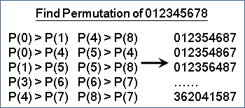
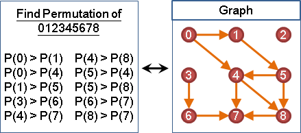
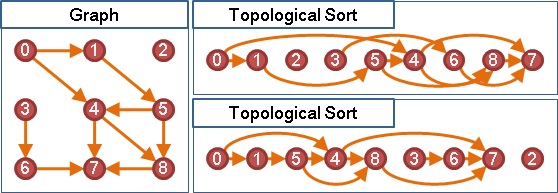
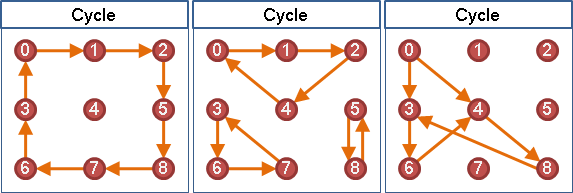
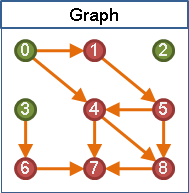
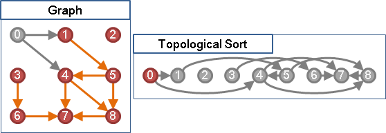
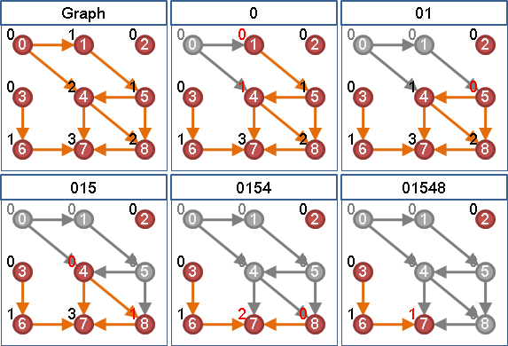

Topological Sort
程度★ 難度★★
楔子
在枚舉所有排列的問題之中，如果我們另外再限制誰要排在誰前方、誰要排在誰後方，那麼在這些限制之下，合理的排列還會剩下哪些呢？
【註：枚舉所有排列，讀者們可另行參考「Enumerate all n-tuples」一文。】
先後限制與圖
誰要排在誰前方、誰要排在誰後方，其實就是兩兩之間的關係，故可以改用圖來表示：把圖上一條由A點連向B點的邊，想成是A必須排在B前方（B必須排在A後方）。
當然啦，也可以把圖上一條由A點連向B點的邊，想成是A必須排在B後方。不過一般來說我們習慣成自然地使用前者。
Topological Sort與Topological Ordering
「拓樸排序」是排序一張有向圖的點的方式。把圖上一條由A點連向B點的邊，想成是A必須排在B前方（B必須排在A後方）。Topological Sort用來找出合理的排列順序，讓每一個點的先後順序，滿足每一條邊所規定的先後順序。
「拓樸順序」是指一張有向圖經過「拓樸排序」後，每一個點的先後順序。
一張圖經過Topological Sort的結果可以有很多種。只要不違背圖上每一條邊的先後規定，要怎麼排列圖上的點都行。
圖上不能有環
當圖上有環時，便無法進行Topological Sort。因為環上每一個點都會有連向自己的邊，意味著環上每一個點必須排在其他點的後方，環上每一個點都不能在排列順序中拔得頭籌，所以合理的排列順序不存在。
Topological Sort: 很普通的演算法
程度★ 難度★
觀察問題
要找出合理的排列順序，首先得決定第一點！知道如何找出第一點，那麼就可以循序漸進的再找出第二點、第三點了。
可以作為第一點的點，想必它不必排在其他點後方。也就是說，沒有被任何邊連向的點，就可以作為第一點。如果有很多個第一點，那麼找哪一點都行。
決定第一點之後，那麼剩下所有點都會在第一點後方。也就是說，由第一點連出去的邊，其先後規定已經被滿足了，規定存不存在都無所謂。因此，決定第一點之後，就可以刪去此點，以及刪去由此點連出去的邊──原問題可以遞迴地縮小！
只要反覆的尋找沒有被任何邊連向的點，然後刪去此點以及刪去由此點連出去的邊，就可以找出一個合理的排列順序了。
附帶一提，要找出合理的排列順序，也可以由最後一點開始決定！無論要從第一點找到最後一點，或是從最後一點找到第一點，都是可以的。各位可以想想看該怎麼做。
找出一個合理的排列順序（adjacency matrix）
儘管這個問題有Recursive的性質，可以用遞迴實作，但由於遞迴的分支只有一條，故亦可以用迴圈實做。我想大家都會選擇以比較簡單的迴圈方式來實做吧？
實作時可以利用變數紀錄圖上每一個點目前仍被多少條邊連到。尋找沒有被任何邊連向的點，就直接看該變數是不是零；刪去由此點連出去的邊，就順便更新變數的值。
找出一個合理的排列順序（adjacency lists）
時間複雜度
時間複雜度等於一次Graph Traversal的時間。圖的資料結構為adjacency matrix的話，便是O(V^2)；圖的資料結構為adjacency lists的話，便是O(V+E)。
UVa 10305 200
找出所有合理的排列順序
請用backtracking。此處不詳述了，直接看練習題吧。
UVa 124
計算所有合理的排列順序個數
需要使用Dynamic Programming解決，時間複雜度O(2^V * V^2)。
Topological Sort: Depth-first Search
程度★ 難度★★
Depth-first Search與Topological Sort的關係
DFS離開點的順序，顛倒之後，正好是拓樸順序。
DFS優先走到最深的點，直到不能再深為止。DFS也會優先找出所有最深的點，離開點的原則是最深的點先離開。最深的點當然就是拓樸順序最後的點。
找出一個合理的排列順序（adjacency matrix）
Activity Network
程度★ 難度★★★
Activity on Vertex Network
【待補文字】
UVa 452 10461
Activity on Edge Network
【待補文字】
UVa 506
Inhomogeneous Sorting
程度★★ 難度★
Inhomogeneous Sorting
1 2 3 ... N，一共N個數字由小到大排好。現在制定了一些兩兩相鄰交換的規則，例如規則「18 ≡ 81」就表示1和8相鄰時可以對調。
問題：一、字典順序最大的排列？二、共有幾種不同排列？
此問題等價於Topological Sorting！
一、把所有的兩兩相鄰交換規則建成一張無向圖。 二、另外製作一張有向圖： 如果無向圖沒有邊ab，且a < b， 那麼就在有向圖增加一條有向邊ab。 最後形成有向無環圖DAG。 三、有向圖的一種拓樸排序，就對應到原問題的一種排列。
要怎麼証明呢？不要問，很恐怖。